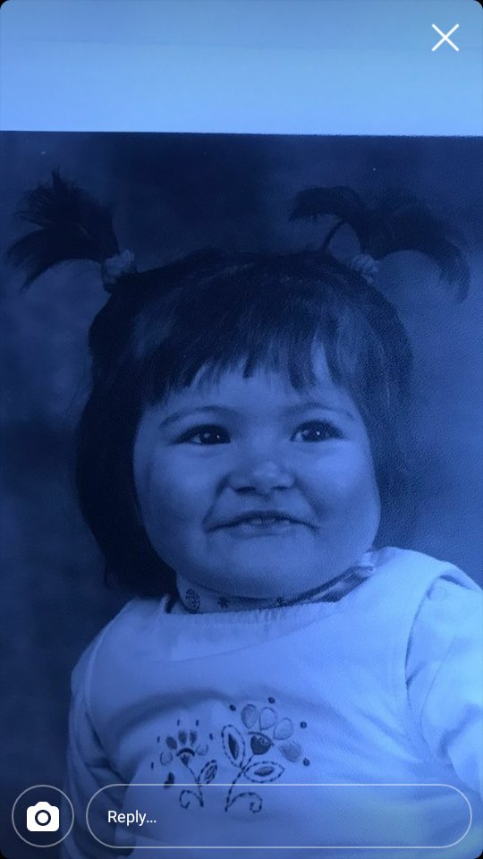
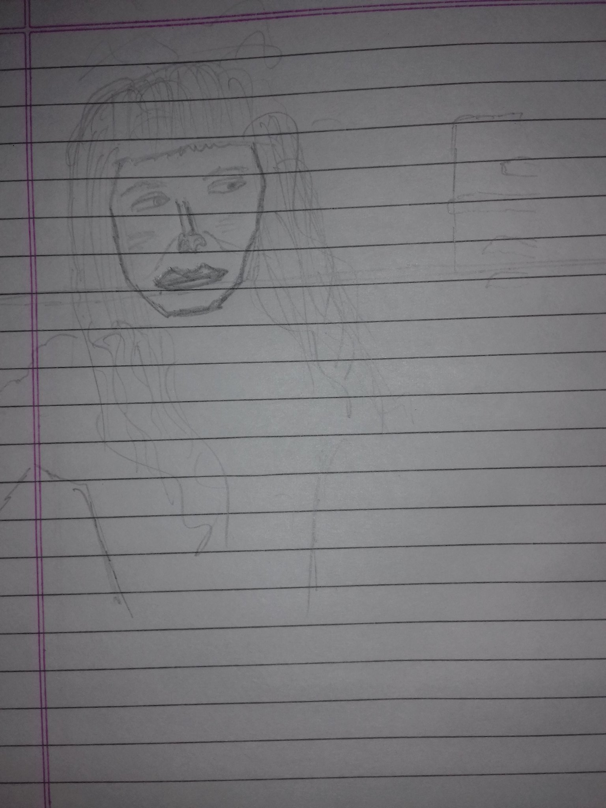

Hello..oups! Bonjour Everyone! My name is Jullia Alloux. I am a French girl who is currently studying Medicine. I have been mentally traumatized by reading the stuffs on my book. I am a single child, born on December 25, 2000. That makes a capricon!. That is my sun sign but it is also my rising sign. Putain!. Oups again, I am kinda clumsy sometimes. I slip on the road too many times, forget things on places. Maybe its because of my moon sign. Take a guess? you cant? then I am not going to tell you.Have I told you how much I like astrology? I am really passionate about it. I could talk about it for hours..
I want to leave my hometown and go somewhere else like Tibet or south America. I wanted to be a monk once and also nearly came close to shaving my hair. There is one guy I met through twitter says that he really likes my hair but he doesn't matter. I don't want to talk about my feelings much because it makes me feel vulnerable. I don't like being vulnerable or do I? Maybe to a right person..I don't want to be called cute because it sounds like a baby animal in french. Tong and socks are my favourite attires and I like to eat tikka masala in an Indian restaurant. I have a birthmark on my cheek. I had a picture which showed my birthmark on instagram so I deleted it. Pfiou!!. I have been thinking about meaning of life a lot lately. Something is missing.
I am funny and smart hahahah but I also contradict my own statement sometimes. I think it is OK to call me pretty.
Shar pei's are pretty too. Infact, I used to look just like one when I was young. Do you want to see what I look
like?hehe

That is my baby pic incase you can't tell but now I look like this!!!

pretty impressive huh. I look so good!
I like things which can touch my soul(this is an assumption). There is one song that I happen to really like:- Click here